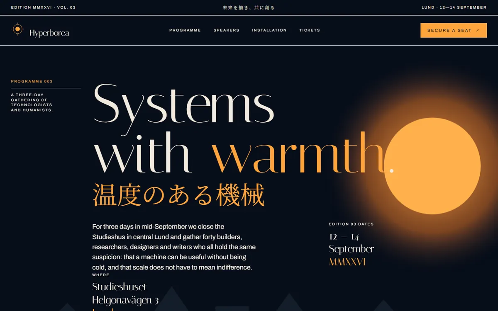

Webbdesign
Tre sajter.Du bedömer.
En byggare. Tre sajter. Ingen delad mall, ingen delad palett, ingen delad rytm mellan dem.
hej@alunix.seBevis
Du öppnar dem själv.


Samma händer bygger också Alunix OS.
Så här
Så bygger du sajten.
01
MaterialDu skickar logotyp och text. Designen kommer ur dem, inte ur ett tema.
02
FörslagDu får ett förslag att se. Svaret kan vara nej.
03
ByggeSajten byggs och testas.
Leveranstid: [behövs leveranstid]
04
PrisPriset sätts per uppdrag.
Pris: [behövs pris]
Kontakt
Du mejlar. En person svarar.
Svaret kan vara nej. Du hör det direkt.
Inget formulär
hej@alunix.se